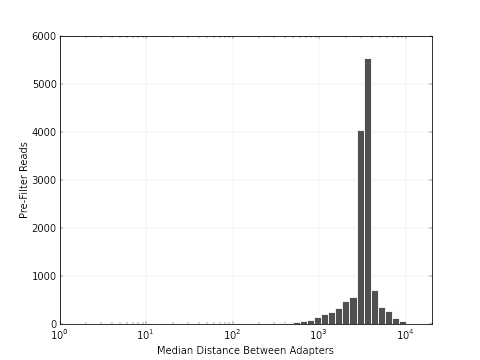

| Adapter Dimers | 6.653714103212413E-6 | Short Inserts | 1.6634285258031032E-4 |
| Medium Inserts | 0.002202379368163309 | Adapter Dimers | 1.5612558742252267E-5 |
| Short Inserts | 2.810260573605408E-4 | Medium Inserts | 0.0037626266568827967 |
Observed Insert Length Distribution |
|---|
|  |